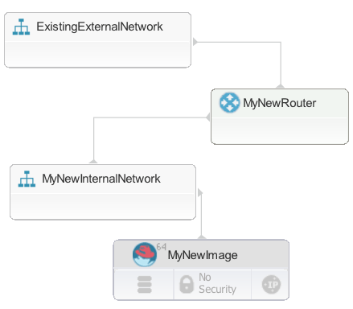

Modeling new network resources
You can model new network resources, such as routers and networks. When you provision the blueprint, the target cloud creates the network resources.
The type of cloud resources that you can create depends on the target cloud. Ensure that the blueprint designer palette shows the correct resource types by verifying that you are connected to the correct cloud project before you begin to model network resources.
-
OpenStack and OpenStack-based clouds
In the blueprint designer, you can create networks, subnets, and routers. When you provision an environment from the blueprint, the engine creates corresponding network resources on the OpenStack cloud. Because the engine is a Heat-compliant engine, you can also edit the source code of blueprints to add other OpenStack Neutron and Nova types. The engine creates these other types at provisioning time, too. However, these types are not included in the blueprint designer.
This table describes the network resources that you can connect to or create on OpenStack and OpenStack-based clouds.
Network resource Connect to an existing network resource Model a new network resource in the blueprint graphical editor and provision a new instance Code a new network resource in the blueprint code and provision a new instance Network * * * Router * * * Security group * * Subnet * * * Port * * -
Amazon Web Services (AWS)
In the blueprint designer, you can create networks, routers, and subnets. When you provision an environment from the blueprint, the engine creates equivalent network resources on AWS. For example, if you create a network in the blueprint and then create a configuration file for AWS, the configuration file maps the
OS::Neutron::NetOpenStack resource type to theIBM::EC2::VPCAWS resource type. Therefore, when you provision an environment from that blueprint and configuration file, the engine creates a virtual private cloud (VPC) on AWS.This table describes the network resources that you can connect to or create on AWS.
Network resource Connect to an existing network resource Model a new network resource in the blueprint graphical editor and provision a new instance Code a new network resource in the blueprint code and provision a new instance Network * * * Router * * * Security group * * Subnet * * * Port * * Internet Gateway * -
SoftLayer®
Modeling new SoftLayer® network resources in blueprints is not supported. You must create network resources separately and attach resources to those network resources; see Attaching resources to existing networks.
Network resource Connect to an existing network resource Model a new network resource in the blueprint graphical editor and provision a new instance Code a new network resource in the blueprint code and provision a new instance Network * Router * Security group * Subnet * Port * -
VMware
Restriction: VMware NSX is required for creating network resources on VMware clouds. Without NSX, you can attach resources to existing networks, but you cannot create network resources; see Attaching resources to existing networks.
VMware NSX provides a networking layer on top of VMware vCenter. When you are using VMware NSX with VMware vCenter, you can model new networks and routers in the blueprint designer. These resource types are not available in the palette; you must add the types to the blueprint source code manually.
When you provision environments from the blueprint, the engine creates equivalent network resources on NSX. For example, if you add a network to a blueprint and then create a configuration file for VMware, the configuration file maps the
OS::Neutron::NetOpenStack resource type to theIBM::VCenter::NetworkVMware resource type. Therefore, when you provision an environment from that blueprint and configuration file, the engine attempts to create a network on NSX.Note: Network creation on NSX is a preview feature and is not supported.
Restriction: Not all VMware resource types are implemented. For example, if you include the types
IBM::VCenter::Port, the engine ignores those resources. The engine creates only new networks and new routers.Similarly, the blueprint design server does not support creating subnets or datastores on NSX; if you specify a subnet or datastore in the blueprint, those resources are ignored. New instances are always added to the resource pool, not to other locations such as datastores or clusters.
This table describes the network resources that you can connect to or create on VMware NSX.
Network resource Connect to an existing network resource Model a new network resource in the blueprint graphical editor and provision a new instance Code a new network resource in the blueprint code and provision a new instance Network * * * Router * * * Security group * Subnet * * Port * -
Azure
Modeling new Azure network resources in blueprints is not supported. You must create network resources separately and attach resources to those network resources; see Attaching resources to existing networks.
Network resource Connect to an existing network resource Model a new network resource in the blueprint graphical editor and provision a new instance Code a new network resource in the blueprint code and provision a new instance Network * Router * Security group * Subnet * Port *
To model new network resources, drag them from the blueprint designer palette or add them to the blueprint source code directly. Then, connect the network resources to other resources, such as virtual images.
For example, the following steps describe how to add new images to a new internal network and then connect that internal network to an existing external network via a new router.
- In a blueprint, add one or more images.
- From the Networks drawer of the palette, add a New Internal Network to the blueprint, and connect the images to the network.
-
Add a subnet to the internal network:
- In the source code for the blueprint, add a subnet resource. Use the
OS::Neutron::Subnetresource type. -
At minimum, specify the following properties for the subnet resource:
-
network_id
Specify the ID of the network that contains the subnet or a reference to that network.
-
cidr
Specify the range of IP addresses in Classless Inter-Domain Routing (CIDR) format.
For example, the following code shows a new network that is named
MyNewInternalNetwork. Then, it shows a new subnet that is on that network. This subnet is connected to the network and represents the IP address range of 192.168.99.0 through 192.168.99.255.``` MyNewInternalNetwork: type: OS::Neutron::Net properties: name: MyNewInternalNetwork
MyNewSubnet: type: OS::Neutron::Subnet properties: name: 'MyNewSubnet' network_id: { get_resource: MyNewInternalNetwork } cidr: '192.168.99.0/24' ```
-
- In the source code for the blueprint, add a subnet resource. Use the
-
Add the existing external network to the blueprint.
- Add a router to the blueprint.
- Connect the internal network and external network to the router.
The new internal network is connected to the external network through the new router. When you provision an environment from this blueprint, the engine creates matching network artifacts on the OpenStack or OpenStack-based cloud. The following figure shows an example of how the blueprint might look in the editor. The subnet is not shown on the diagram.

Creating network resources in VMware
As another example, the following steps describe how to create network resources in VMware NSX. Because the NSX types are not fully implemented, you must provide NSX properties in the blueprint code so they are passed to the VMware types in the configuration file.
- In a blueprint, add one or more images.
- From the Networks drawer of the palette, add a New Internal Network to the blueprint and connect the images to the network.
-
In the blueprint source code, specify VMware properties for the new network. Because no VMware network type is yet implemented, you must use the OpenStack type
OS::Neutron::Netand add properties for VMware, as in the following example:MyNewInternalNetwork: type: OS::Neutron::Net properties: name: MyNewInternalNetwork metadata: vmware_properties: transport_zone_id: vdnscope-1 edge_name: { get_param: edge_name } resource_pool: { get_param: vmware_resource_pool } appliance_size: compactIn the section
vmware_properties, specify the following properties:-
transport_zone_id
The ID of the transport zone.
-
edge_name
The name of the edge appliance.
-
resource_pool
The resource pool to put the network in.
-
appliance_size
The size of the appliance.
-
-
Add a subnet of the type
OS::Neutron::Subnetto the network, as in this example:``` MySubnet: type: OS::Neutron::Subnet properties: network_id: { get_resource: MyNewInternalNetwork } cidr: 172.17.17.1/24 allocation_pools: - start: 172.17.17.210 end: 172.17.17.230 - start: 172.17.17.231 end: 172.17.17.250 gateway_ip: 172.17.17.1 metadata: vmware_properties: lease_time: "14400" domain_name: mynsx.example.org
```
In the section
vmware_properties, specify the following properties:-
lease_time
Specify the lease time or the value
infinite. -
domain_name
Specify the domain name of the DHCP pool.
-
-
Add a router of the type
OS::Neutron::Router, as in the following example:MyRouter: type: OS::Neutron::Router # Add dependency on network to locate edge_id depends_on: MyNewInternalNetwork properties: name: MyRouter external_gateway_info: network: productionExample metadata: vmware_properties: external_cidr: 10.104.175.123/26 mtu: 2000In the section
vmware_properties, specify the following properties:-
external_cidr
Specify the IP address range for external traffic, in CIDR format.
-
mtu
Specify the MTU value for the uplink interface.
-
-
Add a router interface of the type
OS::Neutron::RouterInterfaceto connect the router to the subnet, as in the following example:router_interface-1: type: OS::Neutron::RouterInterface properties: router_id: { get_resource: MyRouter } subnet_id: { get_resource: MySubnet } -
Add a port of the type
OS::Neutron::Portand connect it to the router and subnet, as in the following example:router_interface: type: OS::Neutron::RouterInterface properties: router_id: { get_resource: MyRouter } subnet_id: { get_resource: MySubnet } -
Specify the output attributes of the blueprint in the outputs section. Attributes are commonly used to provide relevant derived values. In this case, the attributes are the ID of the edge services gateway on the logical switch and the ID of the port group that is associated with that logical switch.
outputs: edge_id: description: The ID of the edge services gateway attached to the logical switch value: { get_attr: [MyNewInternalNetwork, edge_id] } portgroup_id: description: The ID of the portgroup associated with the logical switch value: { get_attr: [MyNewInternalNetwork, portgroup_id] }
Now when you provision an environment from this blueprint, the engine creates network resources on VMware NSX.
Parent topic: Modeling networks